Exercícios
E 7.1.1. Expanda a função suave f(x) em um polinômio de Taylor adequado para
obter as seguintes aproximações:
- f′(x) = 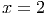 + O(h)
- f′(x) = 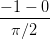 + O(h)
- f′(x) = 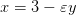 + O(h2)
- f′′(x) = 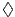 + O(h2)
E 7.1.2. Use os esquemas numéricos do exercício 7.1.1 para aproximar as seguintes
derivadas:
- f′(x) onde f(x) = sin(x) e x = 2.
- f′(x) onde f(x) = e-x e x = 1.
- f′′(x) onde f(x) = e-x e x = 1.
Use h = 10-2 e h = 10-3 e compare com os valores obtidos através da avaliação
numérica das derivadas exatas.
E 7.1.3. Use a expansão da função f(x) em torno de x = 0 em polinômios de Taylor
para encontrar os coeficientes a1, a2 e a3 tais que
- f′(0) = a1f(0) + a2f(h) + a3f(2h) + O(h2)
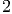
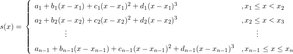
- f′(0) = a1f(0) + a2f(-h) + a3f(-2h) + O(h2)
- f′(0) = a1f(-h1) + a2f(0) + a3f(h2) + O(h2), |h
1|,|h2| = O(h)
- f′′(0) = a1f(0) + a2f(h) + a3f(2h) + O(h)
- f′′(0) = a1f(0) + a2f(-h) + a3f(-2h) + O(h)
E 7.1.4. As tensões na entrada, vi, e saída, vo, de um amplificador foram medidas em
regime estacionário conforme tabela abaixo.
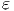
onde a primeira linha é a tensão de entrada em volts e a segunda linha é tensão de
saída em volts. Sabendo que o ganho é definido como
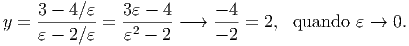
Calcule o ganho quando vi = 1 e vi = 4.5 usando as seguintes técnicas:
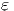
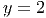
- Derivada primeira numérica de primeira ordem usando o próprio ponto e o
próximo.
- Derivada primeira numérica de primeira ordem usando o próprio ponto e o
anterior.
- Derivada primeira numérica de segunda ordem usando o ponto anterior e o
próximo.
- Derivada primeira analítica da função do tipo v0 = a1vi + a3vi3 que melhor
se ajusta aos pontos pelo critério dos mínimos quadrados.
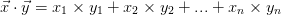
Dica:
 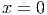
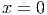
y=[0 1.05 1.83 2.69 3.83 4.56 5.49 6.56 6.11 7.06 8.29]
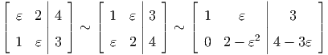
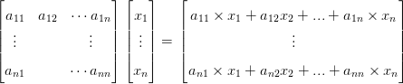